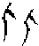
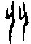
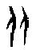
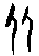

8 比卦 水地比
比，吉，原筮元永貞，无咎。不寧方來，後夫凶。初六，有孚，比之无咎。有孚盈缶，終來有它吉。六二，比之自內，貞吉。六三，比之匪人。六四，外比之，貞吉。九五，顯比，王用三驅，失前禽，邑人不誡，吉。上六，比之无首，凶。
【卦名】
今本：比 帛書：比 歸藏：比 秦簡：比 上博簡：比 海昏：比
比卦的比為親信、親密，親比之義，引申為輔佐。
《說文》：「比，密也。二人爲从，反从爲比。」段注：「其本義謂相親密也，餘義俌也、及也、次也、校也、例也、類也、頻也、擇善而從之也、阿黨也，皆其所引伸。」
《爾雅》：「弼，棐，輔，比，俌也。」俌同輔，人之輔即俌。《爾雅》以比為輔佐、輔弼之義，這是取比的引申義。
依《說文》，反从爲比，由於甲骨文正反皆相通，因此「反从」常與兩人所構成的「从」（從）字非常相似而有混用的情況，但兩字還是可從形體或整句文義中看出不同。「比」字作或，「从」字或。卜辭中比多用作親密、親信、親近的意思。至於現在所用的類比、比較、併比、比例，《周易》中的輔佐…都是從親密的本義引申而來。
《象傳》說：「比，先王以建萬國，親諸侯。」這是取其親密、親信義。而《彖傳》說：「比，輔也，下順從也。」則是取引申義。這兩義用在解釋總體卦爻辭也都可通。
比字他義
《周易》本就是占筮之書，「一字多關」在占筮等算命活動中原本就是常態，因此「比」字不盡然要堅持於親信、輔弼之義。
這裡所舉諸義，雖難以用來解釋《周易》比卦，但所謂多聞闕疑，姑且舉出以供讀者有更多面向的可能參考。
《左傳》閔公元年：「畢萬筮仕於晉，遇屯之比。辛廖占之，曰：吉，屯固比入，吉孰大焉？其必蕃昌。震為土，車從馬，足居之，兄長之，母覆之，眾歸之。六體不易，合而能固，安而能殺。公侯之卦也。公侯之子孫，必復其始。」這是以入、合來解釋比。
甲骨文卜辭中有時比也通匕和妣，為女性先祖之稱。比字由兩個匕所構成，匕字卜辭可同於今之妣，祖妣之妣。另匕也有雌性之義，相對於丄（古文與土混淆）之雄性。如「牝」或「匕牛」為母牛，「牡」或「牛丄」為公牛。若把牝的牛字旁換為羊則為母羊，換為鹿字旁則為母鹿…以此類推。個人猜測，由於匕有女性之義，造字之初是以兩個女性在一起來表達人的親密之狀。
至於《周易》中比是否具有「妣」義？這是有些許可能的。六三「比之匪人」有可能是作「妣」用，因為這與《詩．四月》「先祖匪人」語法完全一樣，另在否卦有「否之匪人」帛本作「婦之匪人」。再如，「顯比」是否就是「顯妣」？古經典中有「顯考」及「顯祖」之用語，「顯妣」為類似之用語。雖然就目前所見之《周易》經文來研判作「顯妣」於義不符，但也難保未來是否會有新的資料來驗證。
「比」在《周禮》中也是一個行政單位，五家為一比，以彼此互相照顧：「令五家為比，使之相保；五比為閭，使之相受；四閭為族，使之相葬；五族為黨，使之相救；五黨為州，使之相賙；五州為鄉，使之相賓。」而由五家一比也發展出「大比」的制度：「及三年，則大比，大比則受邦國之比要。」鄭注：「比，謂使天下更簡閱民數及其財物也。受邦國之比要，則亦受鄉遂矣。鄭司農云：五家為比，故以比為名，今時八月案比是也。要謂其簿。」「大比」為三年一次的人口與資產調查，這是從當時的「五家一比」制度擴充而來。
【卦義】
親近，比附。輔助，輔佐。
《彖傳》「比，輔也，下順從也」。比卦原為小方國順從於大國，於人際關係則為小人向大人表示服從，向大人親密、靠攏的意思。《雜卦》：「比樂師憂。」師為聚眾討伐他國，因此多憂。比為國與國、人與人親密相善，因此多樂。
卦象為五個陰爻向一個陽爻親近、比附，有眾臣親近、輔佐君王之象。
九五為比卦主爻，而五個陰爻，特別是下卦坤的三畫陰爻，象徵的是小方國、群臣、群眾、百姓（坤為土、為邦、為眾）。九五之尊高高在上，群眾莫不臣服，向上親比奉承（陰在陽下為承為順）。因此比卦的「親比」是一種尊卑分明的下對上關係，也是一種不平等的國際或人際關係：小國臣服於大國，弱者向強者靠攏親近，陰順陽，小從大，下附上。下屬討好上司、晚輩取悅長輩、百姓順從官員…。
卦象又有水潤地之義。坎本為水險，但其險位在下（坎為溝瀆、川、谷，都是取其低地之象），坎卦在外本就有險去之義，亦有屏障防禦的作用，今又可潤下卦之坤地，因此為「樂」。何晏曰：「水性潤下，今在地上，更相浸潤，比之義也。」《子夏易傳》：「地載水而澤也，水得地而安也。」或引作「地得水而柔，水得土而流。」這都是在講坎水滋潤坤地。
這與萃卦上兌澤下坤地極為類似。坎與澤都是大凶之卦，但因都是水，所以遇坤地反而凶象不見，滋潤了大地，這也是坤卦包容與廣生的奇妙作用。反之，這兩個險卦若遇到乾卦就有完全不一樣的情況，由於乾為剛健，遇險則有與險決戰的傾向，如天水訟，水天需，澤天夬，都有與險相戰之象。
比卦在六十四卦裡排在師卦之後，並與師卦相綜而成一對卦。《序卦傳》：「師者眾也，眾必有所比，故受之以比。」兩卦最大差別在於師卦九二一陽在下居於臣位，陽剛之臣應於君，為武官受命帥眾；而比卦則是九五之尊的陽爻在上，為君王高高在上為眾人所親附之象。又坎為憂心，坤為腹，《清華簡》聖人卦位圖則以坤為胸。師卦為憂心藏於胸腹之內，比卦則為憂心散於胸腹之外，因此《雜卦傳》說「比樂師憂」。
再就典故來看，師卦為周武王以太公望為師，興師伐紂，至於「開國承家」，分封諸侯「以正功」。比卦則是伐紂之後周邊方國歸順來朝，這也是《象傳》說的：「比，先王以建萬國，親諸侯。」《周禮》：「比，小事大以和邦國。」鄭注：「比猶親，使大國親小國，小國事大國，相合和也。《易》比《象》曰：先王以建萬國，親諸侯。」
王弼說：「比復好先。」這是說，比、復兩卦的吉道是要積極主動，掌握先機，這與乾卦、需卦，及大壯等一類陽剛之卦必需「冷靜」、三思而後行、伺機而動有很大的不同。為人臣者輔助、親近君王，要當仁不讓，不落人後，不宜姍姍來遲，推託禮讓，這也是初爻為吉而上爻為凶的原因。但在此同時也應注意自己立場，如《左傳》昭公二十八年所說，「擇善而從之曰比」，不要因為想要奉承上意而背離正道（如六三）。
比，吉，原筮元永貞，无咎。不寧方來，後夫凶。
- 彖曰：比，吉也。比，輔也，下順從也。原筮元永貞，无咎，以剛中也。不寧方來，上下應也。後夫凶，其道窮也。
- 象曰：地上有水，比。先王以建萬國，親諸侯。
【今解】
親比則吉。原田之象的問筮結果，大善而長久堅定，不會有罪咎。動亂不安的方國也都歸順而來，最後遲遲不來者，大凶。
比卦為比附、親近之義，比附的是上面的九五之君。比道應該主動而迅速，當仁不讓；落後者則大禍臨身，故凶。
【字義】
比吉：親比而得吉；或筮問親比之事為吉。比有兩義，一是親比。二是做為筮名，即「巫比」（筮比）。《周禮》九簭「六曰巫比」，鄭注：「此九巫讀皆當為筮，字之誤也。」「比，謂筮與民和比也。」孔疏：「比是相親比之事，故比卦云『建萬國，親諸侯』，故知比為筮與民和比。」《周禮》有「九簭」，簭即筮。「九筮」類似於卜法中的「八命」。「命」為命題，即問題類型。八命為八種問題類型。「九筮」即筮法中的九種問題類型。「比吉，原筮元永貞」可能是古代「筮比」，筮問親比之事，得此象則占斷為吉。「原筮」為「筮比」時得「原田之象」因此有了「元永貞」的占斷。原田之象即坎水地上流，坤土之上有坎水。
原筮：原田之筮，得原田之象的問筮結果。原筮有多種不同解釋，傳統多以「原」為原本，或以原為「再」。如程子：「故必推原占，決其可比者。」依程子解釋，原筮為原本、最早的問筮。另一說法認為原是「再」，《爾雅》：「原，再也。」俞琰：「原，再也。《禮》之原廟、原蠶，《春秋左氏傳》之原田，皆訓再。初筮得坤，再筮得坎。」朱熹、來知德、朱震亦採此說法。以原為再者，多舉蒙卦「初筮告，再三瀆」對舉為證。朱熹：「必再筮以自審，有元善長永正固之德，然後可以當眾之歸而无咎。」依朱熹說法，原筮是為了慎重起見，要再次求問以自我審查，於義亦可通。干寶則以原為卜：「原，卜也。《周禮》三卜，一曰原兆。」《周禮》「原兆」鄭注：「兆者，灼龜發於火，其形可占者。其象似玉瓦原之璺鏬，是用名之焉。上古以來，作其法可用者有三，原，原田也。杜子春云：『玉兆，帝顓頊之兆。瓦兆，帝堯之兆。原兆，有周之兆。』」干寶說法多數學者不贊同，但卻是最值得思考的一種可能。「原筮」應作「邍筮」，邍為平原的意思，是原的本字。邍為高邍、平邍的邍，後來都作原，作高原、平原。上博簡作「备」，為邍的簡化。《說文》：「高平之野，人所登。」段注修正為「高平曰邍」，現今以「原」為「原本」之義則是與「厡」字混淆，《說文》無原字，但有厡字：「厡，篆文从泉。」段注：「厵乃古文，籒文也。後人以厡代高平曰邍之邍，而別製源字爲本厡之厡，積非成是久矣。」又鄭玄曰：「下平曰衍，高平曰原，下溼曰隰。」「原兆」講的既是「原田之兆」，那麼同理推論，「原筮」當是「原田之筮」，即筮卦結果得到原田之象，即坎水地上流之象。
元永貞：元者善之長，元為善之大者，大善之義。永為永恒、長久。貞為貞定、堅定，大正。元永貞，大善而長久堅定。
不寧方來，後夫凶：動亂不安的方國已經歸順而來，後來者大凶。「不寧」即不安、動亂的意思，典籍的常用辭。「方」字在甲骨文卜辭中常做為「方國」，同「邦」，某某方國皆作「某某方」，《周易》中的「鬼方」亦作此解。「不寧方」指的是動亂不安的方國，「不寧方來」為不寧之方國來朝。王夫之：「不寧方謂不寧之方。」王弼：「不寧方所以來，上下應故也。」孔疏：「不寧之方，皆悉歸來。」困卦「朱紱方來」王弼注：「處困以斯，能招異方者也，故曰朱紱方來也。」王弼注皆以「方」為異方，近似於「異邦」、「方國」之義。「後夫」即後來之夫，後來者。夫作名辭，讀作「膚」，同「丈夫」的「夫」。」後夫凶，指遲遲未歸順者為凶，此可能指的是上六爻，因就時間上來說，上位即「後」，遲遲而不來歸順者，即「後夫」。干寶：「天下歸德，不唯一方，故曰不寧方來。後服之夫，違天失人，必災其身，故曰後夫凶也。」楊萬里以禹殺防風的故事來解釋比卦：「萬國朝禹，而防風獨後，諸侯朝齊，而譚子不至，其凶何如哉？」高亨則進一步持論認為禹殺防風即是比卦卦辭的典故。高亨：「不寧侯為古代成語，不寧之侯謂之不寧侯，不寧之邦謂之不寧方，其意一也。」「不寧方來謂不寧之邦來朝也，後夫者後至之人也。諸侯朝王，後至者誅，故曰不寧方來，後夫凶。《國語．魯語》：仲尼曰：『丘聞之，昔禹致群神於會稽之山，防風氏後至，禹殺而戮之。』《竹書紀年》：『帝禹八年春，會諸侯于會稽，殺防風氏。』不寧方來後夫凶，疑即禹殺防風之故事也。」高亨所說甚是，但「諸侯朝王」之事不見得是在禹時，也有可能在武王時亦有過類似的故事。另一解釋以不寧指內心之不安，「不寧方來」描述姍姍來遲而內心不安之貌，因見眾人皆比附，最後心有不安才來比附。程頤：「人之不能自保其安寧，方且來求親比，得所比，則能保其安。」朱熹：「其未比而有所不安者，亦將皆來歸之。若又遲而後至，則此交已固，彼來已晚，而得凶矣。」方也有人解釋作「并」，不寧方來，因不安而一同前來。
初六，有孚比之，无咎；有孚盈缶，終來有它吉。
- 象曰：比之初六，有它吉也。
【今解】
以誠信前去親比，沒有罪咎。誠意有如盛滿瓶的水，最後自然會有意外的吉利之事。
初六毫無相應之爻，與九五之君更完全沒有關聯，因此就身份來說完全沒有什麼親比的正當性。但因為比道貴早、貴快，初六是比卦的第一爻，誠意很夠，爻動下卦成震，為前行之象，以最積極而迅速的態度及足夠的誠意前往，感動人心。最終會有意外的好事。但反之，若誠信不足，那麼反為凶咎。
【字義】
有孚：孚即誠實、誠信。
盈缶：缶，音「否」，古時土製的瓦器。盈為滿。盈缶則形容「有孚」，誠意有如裝了滿瓶子的水。虞翻曰：「坤器爲缶，坎水流坤。初動成屯，屯者盈也，故盈缶。」缶為瓦器，乃平凡而樸素之器具，比喻誠信之樸實而無華。王弼：「著信立誠，盈溢乎質素之器，則物終來无衰竭也。」程頤：「缶質素之器，言若缶之盈實其中，外不加文飾，則終能來有他吉也。」
有它吉：意料之外的驚喜，所發生的吉事並不是原先所預期的。有它，意外。它為蛇，古時人怕蛇，出門有意外則説「有它」。于省吾以此認為，《周易》中有它為凶象，因此疑「終來有它吉」為「終未有它，吉」之誤，意指「無它」所以而得吉。因「來」、「未」古字形近。《子夏傳》：「非應稱他也。」
六二，比之自內，貞吉。
- 象曰：比之自內，不自失也。
【今解】
以自己內在的涵養而去親比，守正為吉。
六二得位，柔而處坤體之中，又與九五相應，因此是最具臣道的一爻。六二是因為本身的涵養，以及優越的才能，而自然得到上面的賞識，所以是以內在美而和上面產生了親近的關係，與其他爻必需努力爭取的處境完全不一樣。所以《象》曰：「比之自內，不自失也。」
比卦中真正能與九五相親比的只有兩爻，六二與六四，兩爻不但與九五相應，而且全都當位。六二為正應遠應，於內卦，曰「比之自內」。六四則是比應近應，處於外卦，曰「外比之」。
六三，比之匪人。
- 象曰：比之匪人，不亦傷乎。
【今解】
親比錯人，親近到的是沒有實權的人。與小人為伍，結交的盡是損友。
六三以陰居陽不當位，前後與眾陰比鄰相繫，三又是多凶之地，再加諸外卦中所對應的為上六，上六不但與六三不相應，而且高而無位，並不是該親比的對象。六爻中唯有九五才是眾陰應當親近者。因此六三處境，是完全奉承錯人。爻辭沒有說吉凶，但象傳說：「比之匪人，不亦傷乎！」吉凶不言而喻。
【字義】
比之匪人：匪即「非」。有多種解釋，一是以「匪人」為不是人，即大惡之人。則比之匪人意思為所親近的是壞人。二是將匪解釋做「錯誤」，則比之匪人為親近錯人。因六三以陰居陽不當位，與上六並不相應，居多凶之位又與群陰為伍，故曰「比之匪人」。虞翻：「匪，非也，失位无應，三又多凶，體剝傷象，弑父弑君，故曰匪人。」互體有剝，剝為傷象，有弒父弒君、大逆不道之義。竊疑比之匪人也可能指的是女性先祖身體有殘缺。比古通妣，女性先祖之稱。《左傳》昭公七年孔成子立衛靈公論及襄公長子孟縶：「孟縶之足不良，能行」，「孟非人也，將不列於宗，不可謂長」，「弱足者居，侯主社稷，臨祭祀，奉民人，事鬼神，從會朝，又焉得居」。孔成子以孟縶不良於行而說「孟非人也」，則古代講「非人」指的可能是人的身體有殘障。
六四，外比之，貞吉。
- 象曰：外比於賢，以從上也。
【今解】
向外親比，貞定則吉。
六四以柔居柔，當位。又四為近君之地，雖然對內與初六不相應，但比道應當向九五靠攏，雖然六二為九五之正應，但六四具有「近水樓台」之優勢，與九五相鄰，且以柔承順於剛，比鄰而應，因此是能夠輔佐九五的良臣，亦得九五之心。
九五，顯比，王用三驅，失前禽。邑人不誡，吉。
- 象曰：顯比之吉，位正中也；舍逆取順，失前禽也；邑人不誡，上使中也。
【今解】
王者之親比，極其顯耀。以三驅的畋獵之禮彰顯比道，跑在前面對著君王而來的都放走而不射殺。邑中百姓可以安心而不需防備，吉。
這一爻所表現的是王者的比道，公正無私、光明正大的親近關係。而能彰顯君王比道的，莫如畋獵時所用的三驅之禮。
九五是比卦卦主，是其他諸爻所比附親近的對象。而九五亦有君王中正之德，其下四陰來親比，悉皆納之；唯有上六不親比者射殺之，這也是「後夫凶」的後夫。
【字義】
顯比：顯耀之親比，形容君王之親比極其顯耀，光明正大，公正無私。
王用三驅，失前禽：君王舉行畋獵三驅之禮，捨棄向我而來跑在前面的，不射殺。古代君王畋獵之禮，會歷經三次驅逐，所以說「三驅」。三驅時，三面合圍，網開一面，只取背對我而逃去的。因「三驅」之時在三面合圍之下，跑在前面的即是向我而來者，這些跑在前面者不但可免被射殺，還可跑出圍門，所以說「失前禽」。而背我而逃去的，也是跑在後面的，不但會遇上圍欄而無法逃去，還將遭到射殺，這也是卦辭說的「後夫凶」。此在彰顯向我而來者則活，背我而去者則死，「順我者昌，逆我者亡」之意味。孔穎達：「顯比之道，與己相應者則親之，與己不相應者則疏之，與三驅田獵，愛來惡去相似。」「夫三驅之禮者，先儒皆云『三度驅禽而射之也』。三度則已，今亦從之。去則射之。褚氏諸儒皆以為三面著人驅禽，必知三面者，禽唯有背己、向己、趣己，故左右及於後皆有驅之。」陳夢雷：「三驅宜從舊解，三度逐禽而射之也。失前禽者，古田獵之禮，置旃以爲門，刈草以爲圍，獵者三面合圍，開其前門。天子自門驅而入，車三發，徒三刺，謂之三驅。禽獸由門而出者皆免，惟在圍之中者殺之。圍三面而空其門，所謂天子不合圍，開一面之網者此也。從門出者爲前，故曰失前禽也。」禽原本單指雙足有羽者，也就是禽鳥類。但《周易》中的禽皆是禽鳥與走獸之泛稱，並無嚴格之區別。
邑人不誡：傳本皆作「邑人不誡」，「誡」通「戒」。上博簡、帛本皆作「戒」。「不誡」即不需警戒，安心無虞的意思，王弼以「無虞」解釋「不誡」，即取「不戒」之義：「用其中正，征討有常，伐不加邑，動必討叛，邑人无虞，故不誡也。」邑，諸侯國之城邑。邑人即指邑中百姓、居民。因君王之比道顯耀，只殺背叛者，因此邑人可以安心無虞，不需憂心戒備。
上六，比之无首，凶。
- 象曰：比之无首，无所終也。
【今解】
親比而沒有首領，凶。
就時間順序來說，初爻為始，上爻為後。初至四爻皆已比附於九五（象徵國君、大人），唯獨上六居於最後，且凌駕於九五之上，為遲遲而未能歸順者，即「後夫凶」所說的「後夫」。又上六高而無位，以陰柔居頂，陰乘陽為逆，且乘駕的又是九五之主爻。完全背離親比之道，大凶。
就卦象來說，上六爻靜而不動則處坎險之極，動則成巽為不果，因此已是身陷險境而難以自拔之象。
【字義】
比之无首：三種解釋。一是把「首」解釋為君王、親比的對象，即元首、首領。要親比，卻沒有一個親比的對象，找不到首領。二是把「首」解釋作「開始」，無首就是沒有一個開始。也有人將「無首」解釋為遭斬首，所以無首，親比無道而致於殺身之禍。比道之吉，在於掌握先機，上六卻是遲遲在後又沒有親比之意，又凌駕於九五之君，因此大凶。三種解釋都可通
【彖傳注】
比，吉也。比，輔也，下順從也。原筮元永貞，无咎，以剛中也。不寧方來，上下應也。後夫凶，其道窮也。
比，吉也。比，輔也，下順從也：解釋比卦經文「比吉」以及比卦卦義。比為親比之義，引申為輔助，下輔助上，因此說「下順從也」。此亦是上下二體卦象，因坤為眾為順，坤在下為下順從之象。朱熹懷疑「比吉也」三字為衍文。
原筮元永貞，无咎，以剛中也：指九五爻。九五具陽剛而中正的美德，因此原筮元永貞无咎。九五既是比卦治卦主爻，也是成卦之主爻。乾卦九二中行至坤五，乾體變為同人，坤體變成比卦。
不寧方來，上下應也：上指九五，下為六二。九五與六二相應，為上下應。下坤為方（方國），坎為憂心為不寧，因此曰不寧方來。不寧方，不安寧之方國。
後夫凶，其道窮也：後夫，指上六。上位為窮，又乘九五之剛，因此為凶。這也可能講的是乾坤旁通的原則。總和《彖傳》旁通之例，乾坤三次交換可以得既濟或未濟。二、五先行則貞定，一與四，三與上等爻便不再交換。由於比卦是乾二至坤五，因此不再繼續旁通，故曰其道窮。此也有以「其道窮」闡明比卦時中而好先之義，比道好先而掌握先機，不行則已，一行就得五多功之位。後行者則將無功而道窮。
『兆，帝顓頊之兆。似前应加一玉字。
『兆，帝顓頊之兆。似前应加一玉字。
三驅
「古代君王畋獵之禮，會歷經三次驅逐，所以說『三驅』。」
請問三驅是朝哪個方向驅？ 是把動物趕進三面合圍之中嗎？ 謝謝。